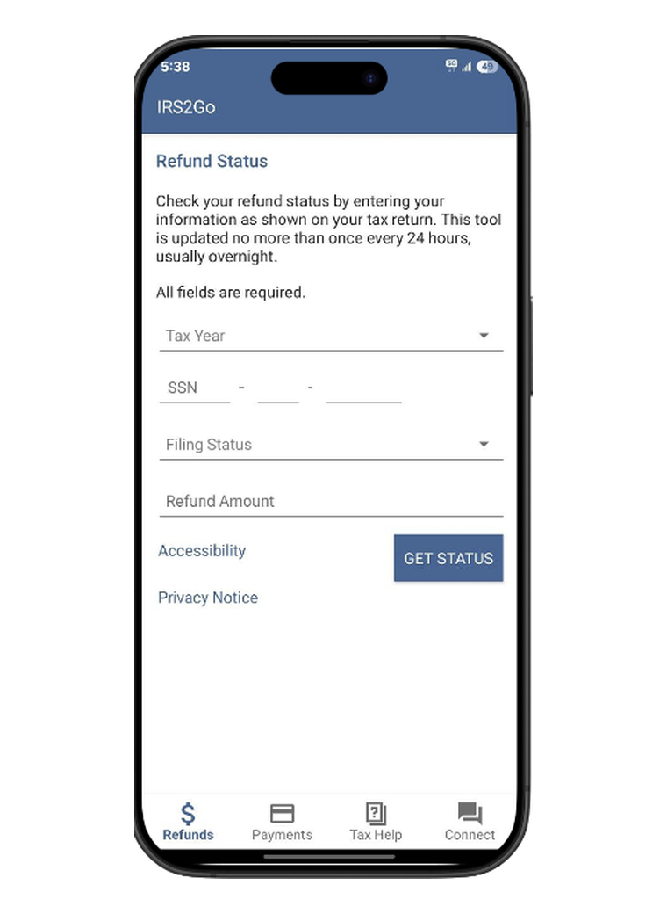
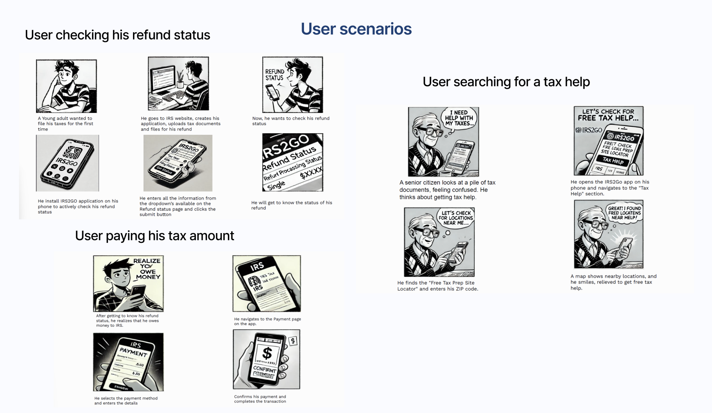
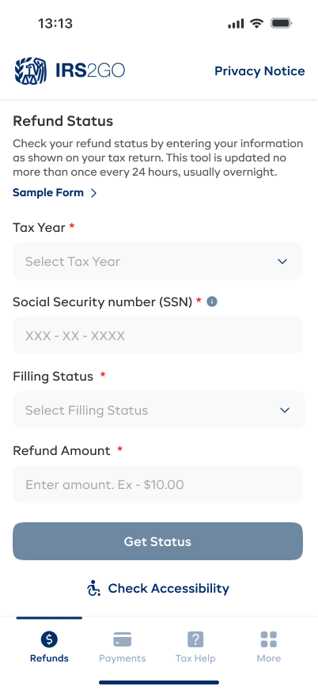
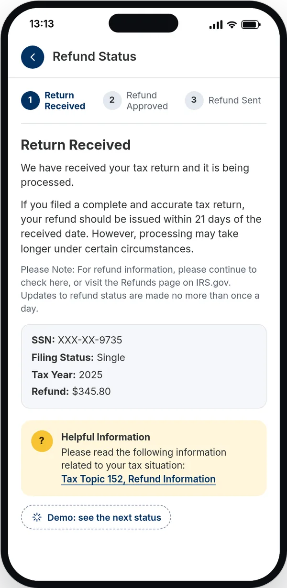
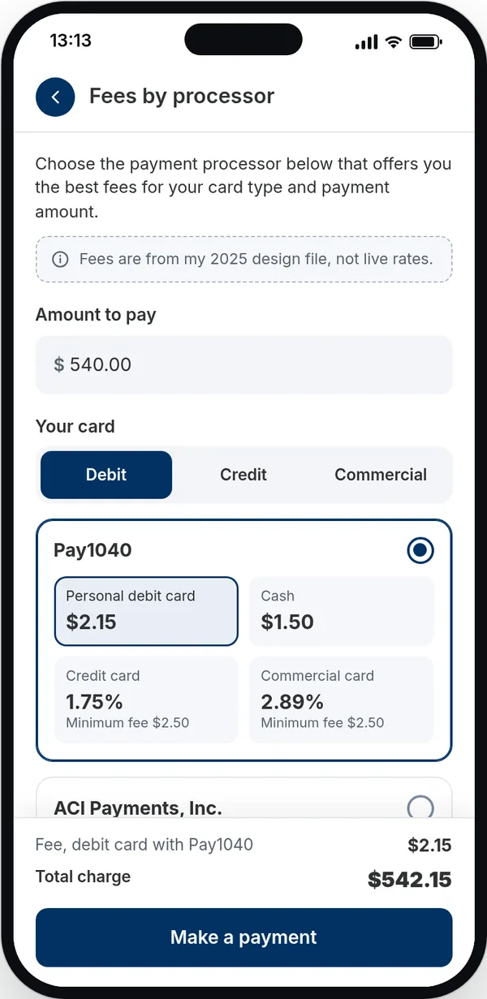
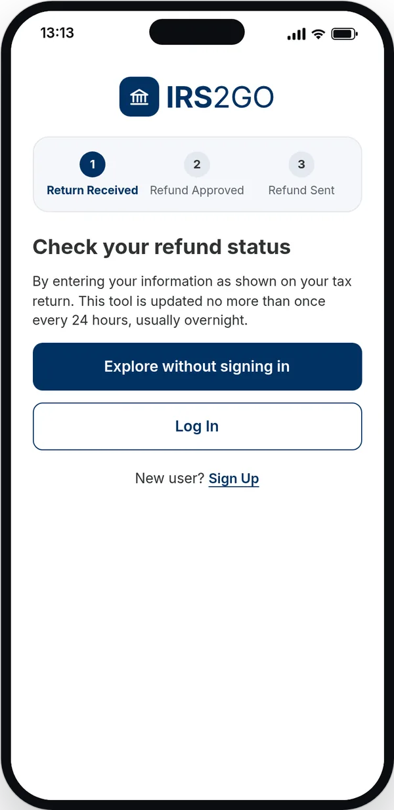

Making the IRS app easy to use
IRS2Go is the IRS's official app. It was rated 2.8 stars, and 45% of people quit before finishing a task. In a team of 5, we redesigned the three things people open it for: checking a refund, paying, and finding free tax help. Then we tested the old app against the new one.
An official app people quit: 2.8 stars, 45% abandoning tasks
Every task finishes inside the app, no account needed for a refund

The problem
A government app people gave up on
People open IRS2Go to check a refund, pay what they owe, or find free tax help. All three were hard: forms rejected correct details, payments bounced out to the website, and help didn't cover refunds or payments.
Research
Reviews, Quora, interviews and a survey
I mined 150+ App Store reviews and 200+ Quora posts, interviewed about 10 taxpayers and ran a survey. We watched people try each task in the old app, checked it against 10 usability rules, and summarized related research papers with AI.

Synthesis
Write out every step, find where it breaks
We wrote out every step of each task to see exactly where people got stuck.
- Refunds: Tax Year looked like a text box but was a list, the SSN was split across 3 boxes, and the refund amount had to match to the cent.
- Payments: the app sent people to the IRS website and through several more pages, and some still couldn't pay.
- Tax help: it explained ways to file, but nothing about refunds or payments.

Decisions log
Every task finishes inside the app
Clear labels, one main action per screen, big tap targets, and 3 clear choices on Home instead of 7 equal menu items: Refunds, Payments and Tax Help.
Help before the error
The old form explained its rules only after people got them wrong. Now every field has a label and an example, and a sample form shows where each answer is on your return.
Part of the redesign that scored 78.25.

The answer as a timeline
"Return Received" gave no date and no next step, and 68% of people left the old flow without a clear answer. Now the status reads Received, Approved, Sent.
Part of the redesign that scored 78.25.

Pay without leaving the app
The old app sent people out to the website in the middle of paying. Now each payment option sits in the app, with its fees side by side.
All three tasks finish inside the app.

Usability testing
Old app against new, then fix
People did the same tasks on the old app and the redesign while thinking out loud. Then they rated each version with the System Usability Scale (SUS), a standard 10-question survey scored out of 100.
Guests first
Many people quit at the login screen; they wouldn't log in just to check a refund. So "Explore without signing in" became the main button.
Nobody dropped off at login after the change.

A summary before paying
3 of 6 testers hesitated to pay because they couldn't see a summary first. We added a confirmation screen with the total before the pay button.
After the change, 0 of 6 were worried about paying.
Results and learning
Usability more than doubled
Bad UX costs trust
In a government app, a confusing screen makes people doubt the agency itself.
Guests first
Letting people in without an account isn't a shortcut. It's how they reach the answer.
Confirm what matters
A summary before paying calmed people more than any form design could.
A plain-language helper
Ask "why is my refund late?" and get an answer in plain words, with a link to the official source.
Help while you type
Catch a wrong format in a field before you submit, instead of after an error.